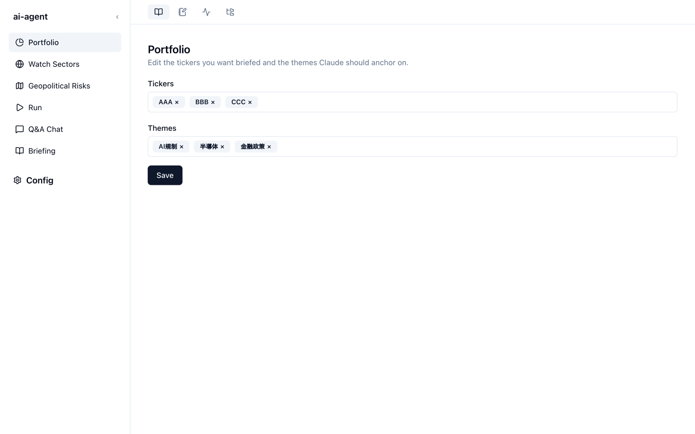

画面の基本
brief-lens の画面は、上部のサービスのタブ、左のサイドバー、右のメインエリアの 3 つでできています。サービスを選ぶとサイドバーの中身が切り替わり、サイドバーで選んだ画面がメインエリアに表示されます。

サービスのタブ
画面上部のアイコンが、4 つのサービスへの切り替えタブです。アイコンにマウスを重ねるとサービス名を確認できます。
| サービス | サイドバーに並ぶ画面 | 使いどころ |
|---|---|---|
| Briefing（本のアイコン） | Portfolio、Watch Sectors、Geopolitical Risks、Run、Q&A Chat、Briefing | 視点の設定、ブリーフィングの生成・閲覧・質問 |
| Journal（ノートとペン） | Journal とエントリの一覧 | 日々の記録と、それをもとにしたブレインストーミング |
| Monitor（波形） | Monitor | Claude Code 全体の利用量とコストの確認 |
| Workspace（フォルダーのツリー） | Workspace | 手元のフォルダーのファイルを開いて読む・編集する |
サイドバー
- 上部の ‹ ボタンで、サイドバーをアイコンだけの細い表示に折りたためます。もう一度押すと元に戻ります。
- サイドバーの右端をドラッグすると幅を変えられます。
- ブリーフィングの生成中は、Run の横に点が表示されます。別の画面に移っても生成は続きます。
- 一番下の Config を押すと、設定画面が開きます（Config（設定画面））。
データの保存場所
アプリが書き込むものは、すべて 1 つのディレクトリにまとまります。npx 版の既定は ~/.brief-lens/ です（--home または環境変数 BRIEF_LENS_HOME で変更できます）。
~/.brief-lens/
config/briefing.json # ポートフォリオ、ウォッチセクター、地政学リスクなどの設定
output/ # 生成したブリーフィング、ジャーナル、エクスポート
input/ # チャットでアップロードした画像や添付ファイル
log/ # アプリのログと利用量のログ
runtime/venv/ # Python の実行環境（消しても次回起動時に作り直される）
session-token # API と Web UI が共有するトークン
.env # 任意: 認証情報の予備の置き場所ポートフォリオなどの設定は、画面から編集しても config/briefing.json を直接編集しても構いません。項目の意味は設定ファイルにまとめています。
認証情報の扱い
Discord や Notion のトークンは、Config → Credentials から OS のキーチェーンに保存します。npx 版はキーチェーンのサービス名 brief-lens を使い、clone した環境（ai-agent）とは別に管理されます。キーチェーンに値がない場合は、~/.brief-lens/.env にある同名の変数が読まれます。
保存した値は画面に表示されません。
Credentials の画面に出るのは、各項目が設定済み（Set）か未設定（Not set）かだけです。
ローカル専用の設計
API は 127.0.0.1 だけで待ち受け、すべてのリクエストにセッショントークン（Bearer トークン）を要求します。Web UI はこのトークンを使って API を呼び出します。インターネットに公開して使うことは想定していません。